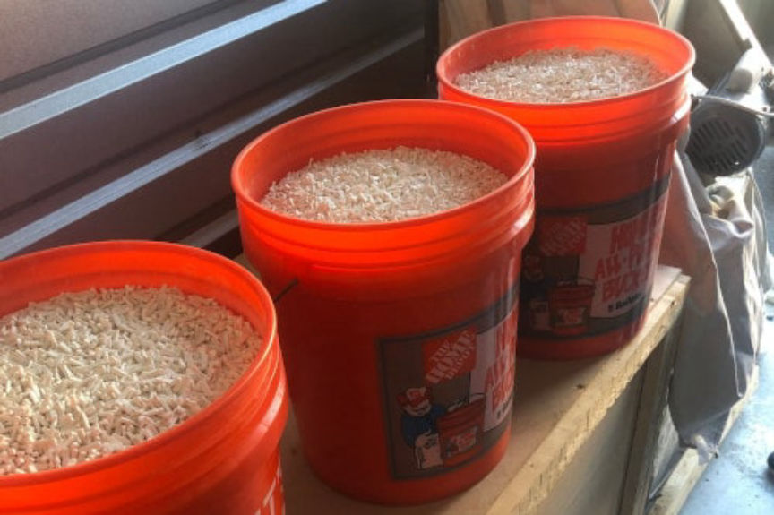
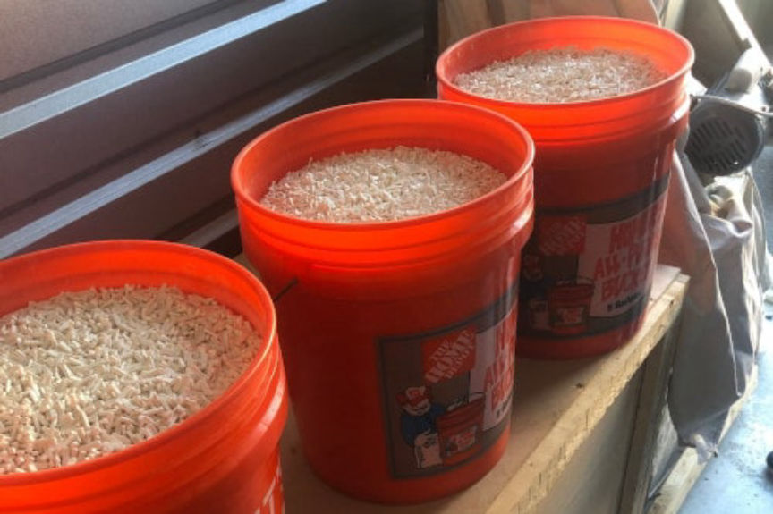

NJ Police Awarded for Darkweb Drug Investigation
The Federal Drug Agents Foundation provided a Lieutenant of the South Brunswick Police Department with an award for the takedown and arrest of the darkweb vendor “Sinmed.” The Sinmed bust led to the largest alprazolam seizure in the state of New Jersey. Police found thousands of pills in five gallon buckets from Home Depot.
The Federal Drug Agents Foundation awarded Lieutenant Jeffery Russo of the Investigations Division of the South Brunswick Police Department for the investigation and arrest of Chester Anderson, the suspected owner of the Sinmed vendor account on Dream Market. Through the Sinmed account, Anderson allegedly distributed counterfeit Xanax pills; fentanyl-laced heroin; methamphetamine; ketamine; alprazolam powder; and steroids. Law enforcement found and seized “approximately 420,000 to 620,000 alprazolam tablets” during the execution of a search warrant linked to Anderson’s arrest.
After the Sinmed arrest, officials revealed they had placed a GPS tracking device on Anderson’s car. Lieutenant Russo explained that Anderson had [used a jammer](https://archive.ph/27goW ( SBPD’s Russo Awarded for “Dark Web” Drug Arrests ) to block signals from the GPS. “Police were able to determine when Mr. Anderson was out of his house and doing something illegal by seeing his car location disappear from their trackers.”
Anderson, the primary co-conspirator, allegedly operated out of Middlesex County, New Jersey. Anderson had two co-defendants: Jarrette Codd and Ronald Maccarty. Both helped Anderson launder his cryptocurrency earnings by exchanging Bitcoin for cash at ATMs in New Jersey and New York. Officials accused the men of laundering more than 2.3 million USD through a number of Bitcoin ATMs. The investigation involved state authorities in New Jersey and New York as well as Homeland Security Investigations, the Secret Service, and the United States Postal Inspection Service.
“When our office received reports of suspicious activity at ATMs in New York and New Jersey, our talented investigators followed the money, using our state-of-the-art Cyber Lab to uncover a dark web counterfeit pill seller whose $2.3 million operation spanned the U.S.,” said Cy Vance, the District Attorney of New York County. “Not only is this the first time state prosecutors in New York have taken down a dark web storefront, this takedown represents the largest pill seizure in New Jersey’s history. If you are engaging in illicit activity on the dark web, you are on notice: we know how to find you, we know how to put you out of business, and we know how to hold you criminally accountable.”
Lieutenant Russo investigated drug cases on the street for years. The first darkweb case Lt. Russo investigated was the Sinmed case. After the Sinmed bust, the South Brunswick Police Department refocused on “normal narcotics investigations” instead of other darkweb vendors. Not only is street level drug dealing more common, but the investigations take much less time and manpower.
The Federal Drug Agents Foundation awarded Lieutenant Jeffery Russo of the Investigations Division of the South Brunswick Police Department for the investigation and arrest of Chester Anderson, the suspected owner of the Sinmed vendor account on Dream Market. Through the Sinmed account, Anderson allegedly distributed counterfeit Xanax pills; fentanyl-laced heroin; methamphetamine; ketamine; alprazolam powder; and steroids. Law enforcement found and seized “approximately 420,000 to 620,000 alprazolam tablets” during the execution of a search warrant linked to Anderson’s arrest.
Counterfeit Xanax Pills Seized During the Bust | New York Times
After the Sinmed arrest, officials revealed they had placed a GPS tracking device on Anderson’s car. Lieutenant Russo explained that Anderson had [used a jammer](https://archive.ph/27goW ( SBPD’s Russo Awarded for “Dark Web” Drug Arrests ) to block signals from the GPS. “Police were able to determine when Mr. Anderson was out of his house and doing something illegal by seeing his car location disappear from their trackers.”
Anderson, the primary co-conspirator, allegedly operated out of Middlesex County, New Jersey. Anderson had two co-defendants: Jarrette Codd and Ronald Maccarty. Both helped Anderson launder his cryptocurrency earnings by exchanging Bitcoin for cash at ATMs in New Jersey and New York. Officials accused the men of laundering more than 2.3 million USD through a number of Bitcoin ATMs. The investigation involved state authorities in New Jersey and New York as well as Homeland Security Investigations, the Secret Service, and the United States Postal Inspection Service.
Chester Anderson entering State Supreme Court in Manhattan | New York Times
“When our office received reports of suspicious activity at ATMs in New York and New Jersey, our talented investigators followed the money, using our state-of-the-art Cyber Lab to uncover a dark web counterfeit pill seller whose $2.3 million operation spanned the U.S.,” said Cy Vance, the District Attorney of New York County. “Not only is this the first time state prosecutors in New York have taken down a dark web storefront, this takedown represents the largest pill seizure in New Jersey’s history. If you are engaging in illicit activity on the dark web, you are on notice: we know how to find you, we know how to put you out of business, and we know how to hold you criminally accountable.”
Lieutenant Russo investigated drug cases on the street for years. The first darkweb case Lt. Russo investigated was the Sinmed case. After the Sinmed bust, the South Brunswick Police Department refocused on “normal narcotics investigations” instead of other darkweb vendors. Not only is street level drug dealing more common, but the investigations take much less time and manpower.